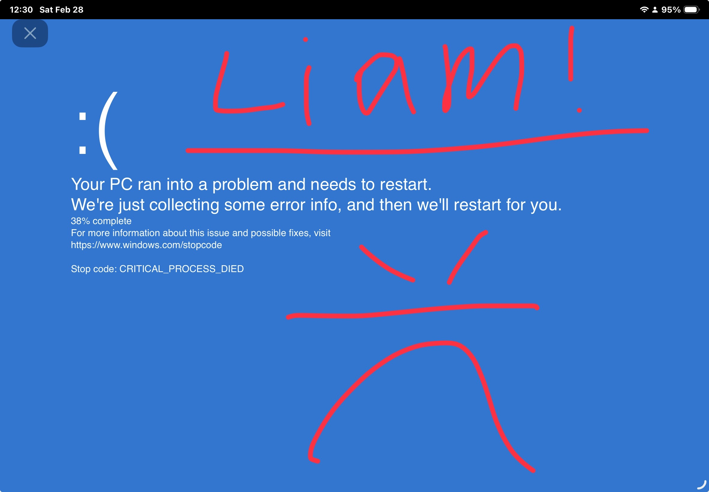

s khanacademy or st math? Do you wish to do something else? But the teacher sees ur screen, use this. it looks like ur restarting ur iPad and you do not get in trouble.

Developed by Liam J. Nizumma
Added By Zaki A. Hashim
Verified by Java Boys
How to use it:
Just tap the screen after it takes a while, that's how it works. Then after you get passed the BSOD there’s no more to it so exit out of the bookmark.